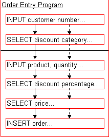
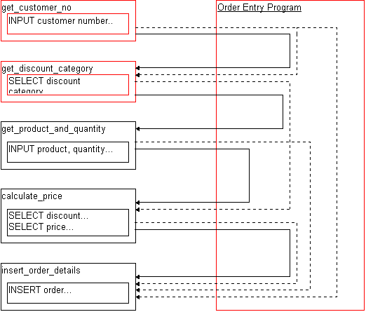
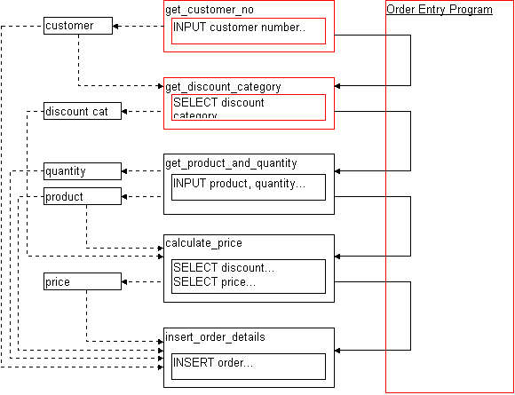

Reproduced with the permission of Macmillan Computer Publishing.
Written by Kerry Sainsbury
More thoughts about reusable code
Informix-4GL, powerful though it is, doesn't always encourage us to write programs that we can easily chop up into little pieces and use again (and again) in new programs. In some cases we'll almost need to enter into unarmed combat to get 4GL to let us reuse our code. This chapter will help you to:
Reinventing wheels and mousetraps has been universally acknowledged as a waste of time. If you can use other people's wheels, or a mousetrap you built on your last project, you can save yourself a great deal of time and effort.
It is a near-certainty that your programs will need to be changed at some time in the future: Requirements change, management change, or people get great flashes of insight about how to make the program better. Whatever the reason, programs need to be able to cope with these changes. Although predicting the future is currently the domain of people with large ear-rings at the end of 0900 numbers, preparing for the future is something we can all succeed at. With a little planning you'll be able to replace old code with latest-model mousetraps, and gain all the new features they may provide.
When Automobile manufacturers build new cars they use tires, batteries, spark-plugs, stereos and lubricants from other manufacturers. They don't waste time and money building their own equivalents when there are perfectly good components available from specialists, often at inexpensive prices. Your average Informix programmer should not need to spend time writing pick-list routines, for example. This has been done hundreds of times before by others. It is the 'wheel' of Informix.
Third-party libraries, such as those provided by Power-4GL, or made freely available at Internet ftp sites provide a wealth of code for reuse. There are a number of excellent 4GL sites available on the Internet. These contain masses of code, generally free, for reuse or other tools to speed development. The largest (and least likely to have disappeared by the time you read this) are at ftp://ftp.iiug.org/and ftp://ftp.mathcs.emory.edu/. Also, http://www.iiug.org/, a Web Site, features an excellent set of links to other Informix sites.
Some third-party libraries, like miniature word-processors with spell-checkers, or graphical charting packages, are so comprehensive that the average Informix site would be foolish to try to duplicate their functionality.
New cars include parts, like alternators or brake-assemblies, that are identical to those used in the previous year's model. There are sound reasons for this:
The typical new-car buyer wants something that's shiny, and has a slightly different look from the previous model. The automobile manufacturer puts emphasis on designing the contours of new cars, not new alternators. They put emphasis on the things that are important to the consumer not the technicians who design the automobile's mechanicals.
Reuse in the software industry isn't as popular as it could be. Generally speaking there are a lot of people out there rebuilding the same software-alternators each time they work on a new project. The advantages in software projects are similar to those in the Automotive Industry:
Informix's reporting routines provide an excellent way to create complicated reports quickly and easily. Built-in functions to provide grouping and summation make it a breeze to use. Unfortunately reporting is also probably the most anti-reuse section of Informix-4GL, so it's fitting that it's the place where we start breaking down the barriers.
Without question the single largest limitation to 4GL reporting is the inability to place a PRINT statement inside a FUNCTION:
FUNCTION proof_that_print_doesnt_work_in_a_function() PRINT "Hello World" END FUNCTION | |The PRINT statement may be used only within reports. If you wish | to print without screen positioning, use the DISPLAY statement without | any field or screen destination. | See error number -4426.
Figure 33.1 Informix-4GL won't let you put a PRINT statement anywhere other than inside a REPORT block.
TIP: If you ever want to see the full text for an error number, use the little-advertised Informix command 'finderr' from your shell, as in: 'finderr -4426'
A common data-processing requirement is to provide a standard format for report header lines. This gives reports a consistent look, and makes it quicker and easier for Operations staff to identify the miscreants who have accidentally printed 1000 page Sales Analysis reports, yet forgotten to cancel the print-job!
The solution to this re-use barrier is to change the function so that instead of attempting to PRINT a line of text, it instead RETURNs a line of text, which the main REPORTing routine then prints. See figure 33.2.
WARNING: Prior to 4GL version 4.12/6.02 this technique of RETURNing large strings may well cause you to encounter a '-4518 Out of Temporary String Storage Space' error.
REPORT some_report(l_code, l_value)
...
ON EVERY PAGE
PRINT page_header("Sales Analysis Report") CLIPPED, " ", PAGENO
...
END REPORT
FUNCTION page_header(l_report_title)
DEFINE l_report_title CHAR(25)
DEFINE l_header_line CHAR(80)
LET l_header_line = get_company_name() CLIPPED, " - ", l_report_title CLIPPED,
" - ", DATE, " PAGE:"
RETURN l_header_line
END FUNCTION
Figure 33.2 An example of how you can build reusable PRINT routines with standard FUNCTIONs.
This is not an ideal solution, because it means you can only place individual lines of a report inside functions -- but even one line is better than none!
You can use this method to build routines which hide difficult tasks like generating Laser-quality reports, via troff or Postscript. This means only one programmer has to go through the grief of learning the formatting language, while everybody else just learns how to use the routines which wrap the under-lying Postscript. See Figure 33.3 for some sample 4GL code to produce a Laser-quality report.
REPORT some_pretty_report(l_code, l_value)
...
ON EVERY ROW
PRINT set_font('ARIAL', 10) CLIPPED;
PRINT move_to(LINENO, 15) CLIPPED;
PRINT set_bold() CLIPPED, l_code CLIPPED, set_normal() CLIPPED;
PRINT move_to(LINENO, 40) CLIPPED;
PRINT set_italics() CLIPPED, l_value USING "####.##", set_normal() CLIPPED
...
END REPORT
Figure 33.3 How a 4GL report code might look after routines capable of generating laser-quality output have been written.
Page headings can be defined inside two different report blocks, FIRST PAGE HEADER, and its brother PAGE HEADER. The difference, you'll not be amazed to hear, is that FIRST PAGE HEADER only affects the first page of a report while PAGE HEADER affects all the subsequent pages.
That is to say: FIRST PAGE HEADER is used instead of the PAGE HEADER clause, rather than in addition to it.
So if you use both clauses in your report you'll find that the first page of your report is missing the 'normal' headings you carefully coded in the PAGE HEADER clause. Sigh.
When confronted with this experience an obvious solution might be to copy the code from PAGE HEADER into the FIRST PAGE HEADER clause, but we all know that's a hanging offense in a chapter about Reusable 4GL code, so we won't even consider that as a viable option. (Besides which, in my experience it means that when the header needs to change it only ever gets changed in one clause or the other -- but never both)
Generally this clause is used for one of two purposes: n Initializing variables used within the report n Printing a long description of the report content, often including detail about the options chosen by the user.
There is often a requirement to initialize variables that are used locally in the report -- you might want to select some system-wide parameters which control how a report is formatted, or maybe just set some totaling variables to zero. Instead of using the FIRST PAGE HEADER clause, a cleaner idea is to put the initialization of variables inside the normal PAGE HEADER and to execute it only on the first page. Have a look at figure 33.4 for a code sample.
REPORT sample_report(I)
DEFINE I INTEGER,
l_running_total INTEGER
FORMAT
-- Don't use FIRST PAGE HEADER to initialize variables...
# FIRST PAGE HEADER
# LET l_running_total = 0
# PRINT "Here is a nice heading for the report"
-- Instead, do the initialization on the first page of the report...
PAGE HEADER
IF PAGENO = 1 THEN
LET l_running_total = 0
END IF
PRINT "Here is a nice heading for the report"
ON EVERY ROW
PRINT "The number is ", I
LET l_running_total = l_running_total + 1
ON LAST ROW
PRINT "There were ", I, " numbers in total"
END REPORT
Figure 33.4 A report showing a good place to perform variable initialization in a 4GL report.
The best use of FIRST PAGE HEADER is to indicate on the report just exactly what options the user selected when they generated it. In a Sales Analysis report this might include the particular Sales Regions selected, or the products being compared. See the top of figure 33.5 for an example.
Without this information it can get quite tricky trying to figure out what you're looking at on a printout -- especially if you created a few different reports at the same time!
Report : Sales Analysis Report Requested by : Iain BurmesterSales Regions : LON - London DUB - Dublin TOK - Tokoroa Product Groups: BL - Leeches (Bulk) BA - Bandages . . . . . . . . . . . . . . . . . . .. . . . . sa0102 Sales Analysis Report 02 February 1996 Page: 1 Sales Region Product Group Product Quantity Value Profit LON - London BA - Bandages 00102 20 675.09 25.30% 02003 30 666.52 22.55% . . . . . . . . . . . . . . . . . . .. . . . . sa0102 Sales Analysis Report 02 February 1996 Page: 2 Sales Region Product Group Product Quantity Value Profit TOK - Tokoroa BA - Bandages 05664 5 180.53 12.32% 02003 7 204.18 9.39% . . . . . . . . . . . . . . . . . . .. . . . .
Figure 33.5 A sample report, showing what an ON FIRST PAGE block is typically used for -- to indicate exactly what the report is reporting!
If your clients are happy with the reporting options appearing on a page of their own (and if you don't offer them any alternative, most of them will be) then you can make ON FIRST PAGE behave as you might expect it to.
Some code to illustrate this simple method appears in Figure 33.6.
report sample_report(i)
define i smallint
define l_first smallint
format
first page header
LET l_first = TRUE
PRINT "Description of report options taken can"
PRINT "be shown, in great detail, on the first page"
PRINT "of the report."
PAGE HEADER
PRINT "Complicated header information, which is required on"
PRINT "every page (including the first!), is placed in the"
PRINT "usual PAGE HEADER clause"
LET l_first = FALSE
-- The major group that you are ordering your report by needs to check the 'l_first'
-- flag, and to skip to the top the next page (which has all the appropriate headings
-- on the top of it)
BEFORE GROUP OF [whatever]
IF l_first THEN
PRINT
SKIP TO TOP OF PAGE
END IF
PRINT "The group header code goes here, just like it normally would"
ON EVERY ROW
PRINT "Print the normal report line here"
END REPORT
Figure 33.6 How to use FIRST PAGE HEADER without having to duplicate the code from the PAGE HEADER block -- look at the 'l_first' variable.
NOTE: The apparently superfluous PRINT in the BEFORE GROUP clause is to let the report engine know that something has been printed on the page. This is necessary because the report engine is 'clever' and would otherwise ignore the SKIP TO TOP OF PAGE request -- because it would consider itself already at the top of a page, and so not need to skip to another one.
On the other hand, if the reporting options and the first page of the report really must appear on the same physical bit of paper then you can either:
WARNING: Never run with scissors, and eating glue is no substitute for a balanced diet!
Change is a part of every-day life, and the part most likely to change in a relational database is the structure of its tables. In the ideal world Clients would know exactly what they want from a system when it is designed, and once coded would never again need to be altered. Unfortunately most of us live in something approaching reality. This section will help you weather such changes with patience and serenity.
LIKE is, absolutely, my favorite feature of Informix-4GL. Everytime your code needs a variable to hold, say, a product number, instead of having to continually say
DEFINE l_product_no CHARACTER(15)
you instead use:
DEFINE l_product_no LIKE product.product_no
If a client later decides that product numbers need to be 20 characters long, then all you need do is alter your table and recompile your code! (OK -- you'll need to change any fields on forms that INPUT or DISPLAY product numbers, and reports that PRINT them, but you get the idea!)
CAUTION: Beware of out-dated advice -- I understand that the first version of 4GL which featured LIKE had some bugs in it, but that was long ago and any such bugs (if they ever did exist) are long gone. LIKE is your friend.
LIKE has a dark side. It's an attractive beast when you first spot it, is RECORD LIKE, but it's the creature that can easily spoil an otherwise peaceful stroll in the woods. These two constructions look as though they were built for one another, and I'm sure they were, but that doesn't mean we have to use them. Here's a short expose revealing their evil ways, and some advice on alternatives.
The following code snippet shows how these two nastys work together in their natural environment:
-- The product table is defined like so: -- product_no CHAR(15), -- price DECIMAL(9,3), -- description CHAR(40), -- colour CHAR(3) FUNCTION display_description(l_product_no) DEFINE l_product_no LIKE product.product_no DEFINE l_product RECORD LIKE product.* SELECT * INTO l_product.* FROM product WHERE product_no = l_product_no DISPLAY l_product.description END FUNCTION
The theory is that this is 'easy'. A programmer doesn't have to think very hard, or type very much -- both true, but there are a number of short-comings with this scheme:
Reality check: For small organizations, with a couple of people doing the coding and schema alterations, and not a lot of programs, this might be considered tolerable by some people, maybe.
Simple - Construct a RECORD containing only elements for the columns you need to SELECT from the table. Never SELECT anymore than you need, and all will be just grand.
FUNCTION display_description(l_product_no)
DEFINE l_product_no LIKE product.product_no
DEFINE l_product RECORD
description LIKE product.description
END RECORD
SELECT description
INTO l_product.description
FROM product
WHERE product_no = l_product_no
DISPLAY l_product.description
END FUNCTION
In Summary: Don't use RECORD LIKE, and don't use SELECT * at all.
When we change or add data to our tables we do it via the UPDATE and INSERT SQL statements. Each of these statements give us two syntax options for their use -- one which makes us identify each column to be changed in the table individually, and another that automatically assumes every column will be altered.
The assume-all-columns-will-change approach has all the same disadvantages as use of SELECT * (see 'How RECORD LIKE and SELECT * do their damage'), plus a few unique to itself -- highlighted in figure 33.7.
| All Columns | Selected Columns | |
| UPDATE sales SET (*) = "CHOCFISH", 100, 17.5 WHERE saleskey = l_saleskey | UPDATE sales SET product_no = "CHOCFISH", quantity = 100, value = 17.5, WHERE saleskey = l_saleskey | |
| INSERT INTO sales VALUES ("CHOCFISH", 100, 17, 5, l_saleskey) | INSERT INTO sales(product_no, quantity, value, saleskey) VALUES ("CHOCFISH", 100, 17, 5, 1, l_saleskey) | |
| Advantages: | ||
| Less typing, when all columns in the table are being updated or inserted. | Significantly more readable -- it's instantly apparent which columns get which values. | |
| No other advantages! | Will not crash if table schema is altered. |
Figure 33.7 Compare the options for INSERT and UPDATE syntax.
When inserting a new row into a table it is important for a program to only specify values for the columns which that program has particular knowledge of.
Imagine a table which records various information about a customer's buying habits including the date of last purchase and the date of their last complaint. This table will be updated by two separate programs which, if the a row does not already exist, will need to insert a new one.
The Purchase Recording Program will include a line of code like:
INSERT INTO customer_habit(customer_no, last_purchase_date) VALUES (l_customer_no, TODAY) and the Complaint Recording Program will include: INSERT INTO customer_habit(customer_no, last_complaint_date) VALUES (l_customer_no, TODAY)
Note that each program only refers to the columns which it has special knowledge about -- they include no mention of any other columns.
This gives huge advantages when table structures change (eg: programs don't fall over!) and means that neither program depends on the existence of columns that 'belong' to any other program -- so while your clients might initially buy the 'Purchase Recording Program' they can later buy the 'Complaint Recording Program' without need to alter any existing code.
Indeed the 'customer_habit' table can be changed for any purpose, by whatever new programs might be built, and no program needs to be changed -- or even recompiled. If you're about to say "but this doesn't let me set default values for columns when I insert new rows", then put your thought on hold for a moment, and read the next section.
When a row is inserted into a table in a database, every column in the row ends up with a value. This value can come from one of three places:
Informix's CREATE TABLE command includes the ability to specify default values for columns. These defaults are used when a value is not explicitly given during an INSERT statement.
So given this table structure:
CREATE TABLE price ( product CHAR(15) NOT NULL,
current_price DECIMAL(9,2),
previous_price DECIMAL(9,2) DEFAULT 0.00,
price_expires DATE DEFAULT "01/01/2010"
)
... consider the results of each of the following INSERT statements:
Option #1
INSERT INTO price (product)
VALUES ("CHOCFISH")
Option #2
INSERT INTO price (product, current_price, price_expires)
VALUES ("CHOCFISH", 19.95, "11/02/1998")
Results:
| SQL | product | current_price | previous_price | price_expires |
| #1 | CHOCFISH | NULL | 0.00 | 01/01/2010 |
| #1 | CHOCFISH | 19.95 | 0.00 | 11/02/1998 |
Figure 33.8 The use of DEFAULTs in your column definition means application programs don't have to setup defaults -- it can leave that job up to the database engine.
It is the use of these default values which lets our programs concern themselves with INSERTing only the columns which they have information about -- and lets them quietly ignore everything else, secure in the knowledge that the 'other' columns will get whatever default values are appropriate for them.
Remember one of the prime considerations when building reusable code: Software should take responsibility for the data it uses -- and not expect other programs to prepare or maintain it on it's behalf.
Object oriented languages such as NewEra and C++ include a number of features to encourage code reuse, including Encapsulation, Inheritance, and Polymorphism. Although Informix-4GL does not provide these constructs naturally, it can certainly be coerced into emulating some of them -- at least partially.
If you're new to all these OO buzzwords, and much of the previous paragraph sounded like so much techno-babble, don't worry. I'll point out the buzzword-to-concept relationships as we encounter them. An understanding of the techniques described in this chapter should also help in understanding what these buzzwords actually mean.
When I was a lad I had a fantastic old Black & White television in my bedroom. Its main use was as a monitor for my very first computer, but it also threw out so much heat that it doubled as a heater during the winter.
About twice a year it would die from heat exhaustion, and I would have to take off the back and fix it. These repairs of mine always impressed my family, but here's the big secret: In order to fix the TV I would simply look around for a valve that wasn't glowing. Once the offending valve had been located I'd extract it, take it down to the TV repair-shop, and ask for "A new one of these, please".
The Valve could be described as a 'TV Component'. A piece that can be readily identified and replaced as needed. Modern PCs have a similar component-based architecture. If your video card dies quietly one night nobody will spend hours trying to identify the offending circuit -- they just replace the entire video card. Similarly, if you decide you want to replace your 360K drive with a 1.44meg one, it's practically just a matter of pulling out the old and inserting the new.
A Software Component then, is an attempt to bring these plug 'n play concepts into the Software Development arena. If it works for archaic Television Sets and Modern PCs then it might just be of use to us too.
Over the last decade the focus of software development has moved from being program-oriented to an emphasis of individual functionality. Instead of stand-alone, monolithic, programs which contain every line of code required to perform their task (see figure 33.1), people are today breaking the programs into hundreds of individual routines and assembling them as required. Programs then become skeletons with calls to the individual routines. These routines, or Software Components, are independent entities and can be easily shared amongst many other programs.
Imagine a typical business application which includes a program to accept customer orders. Traditionally such programs were written with assumptions like 'it will only ever take input via a keyboard', or 'no other program will ever need to be able to calculate a price'. Such assumptions, like most assumptions in the computer industry, can be looked back on and laughed at. The use of Software Components greatly reduces the impact of significant changes to a program's function.
One of the key features of software componentry is the concept of information hiding, or encapsulation. The idea is that programs which need to use a component, should only need to know what the component's interfaces are -- not how it has actually been implemented. If I change the hard-disk controller in my PC to one with multi-megabytes of cache memory, I can safely assume that my database package will perform quicker. I can also assume that the database package doesn't know, or care, why it now runs faster. It's not the database's job to understand the size of the hard-disk cache -- all the database must do is ask for records, and request that new records are written. It's the controller's job to decide how to actually action these requests. This hiding of implementation has been extended in the Object-Oriented paradigm to include the hiding of data associated with a function, and is discussed in 'The Component-Model, and the joy it can bring'
In order to make really reusable code there must be a change in the mind-set of your programmers. This is the single biggest hurdle to over-come, because it requires a fundamental change in the way programmers perceive themselves.
Programmers need to stop considering "The Program" as the center of the Universe. Instead, programs become simple structures used to hold many smaller components together. Divide, conquer, and share amongst your friends.
TIP: When describing new programs talk about Components, not Programs -- say "We'll need the Customer-Group-Selection routine, and the Overdue-Payment routine, to create a new Overdue-Payment report" instead of "We need a new program that lets you choose Customers by group and reports on those with overdue payments"
In the Program-based Model it is the Program which is the center of the Universe. Programs are entirely stand-alone creations, without need of support from any external sources. There is no significant sharing of code between programs.
Figure 33.9 is an (extremely abbreviated) example of a traditional, monolithic, program. Absolutely none of the program's functionality is hidden from the Application Programmer -- she needs to understand the structure of a variety of tables, and the connections between them. The program structure is obscured by the inclusion of every piece of programming detail -- it's not possible to glance at this program and instantly get a 'feel' for what the program does, instead each line of code needs to be studied closely.
Compare this with the 'MAIN' section of figure 33.10. If any part of this program's logic needs to be changed, it will require a significant effort to isolate the appropriate code (or at least it would in a real-sized application).
The only way any of this logic can be reused in another program is by cutting and pasting code.
Because none of this code is shared with any other program you will encounter classic problems when changes are required.
Imagine the calculation of price needs to be changed to accommodate the introduction of a new sales tax -- every program in the system which needs a price figure would require similar alterations (similar, but not the same, because each program's implementation of the pricing routine would invariably be subtly different).
This is an example of how not to cut code.
MAIN.4GL:
MAIN
DEFINE l_customer_no LIKE customer.customer_no,
l_discount_category LIKE customer.discount_category,
l_quantity LIKE order.quantity,
l_product LIKE price.productno,
l_discount LIKE discount.percentage,
l_price LIKE order.price
LET int_flag = 0
INPUT l_customer_no FROM customer_no
SELECT discount_category
INTO l_discount_category
FROM customer
WHERE customer_no = l_customer_no
WHILE int_flag <> 0
INPUT l_product_no, l_quantity FROM product_no, quantity
IF int_flag <> 0 THEN
SELECT percentage
INTO l_discount
FROM discount
WHERE category = l_discount_category
SELECT retail
INTO l_price
FROM price
WHERE productno = l_product_no
LET l_price = l_price * (100 - l_discount) / 100
INSERT INTO orders VALUES (l_customer_no, l_product_no,
l_quantity, l_price)
END IF
END WHILE
END MAIN
Figure 33.9 An example of a traditional, straight-line, program built without regard to any form of structured programming technique.
Any use of Structured Programming techniques will drastically improve code written using the Program-based Model shown in figure 33.9. Structured Programming provides a far stronger level of code reuse than the Program-based model. This is illustrated in figure 33.10 and represents the sort of code typically found in 'library' routines.
Take special note of the fact that the 'MAIN' section of the program focuses on clearly showing what the program does, rather than how it has been done. This is a huge step in the right direction.
The major limitation with this technique is that, although it isolates the program from much of the implementation method, it still requires the program know about the underlying data structures used in the routines.
In our example, the program itself doesn't actually care about the majority of the variables used, it is merely passing variables from one routine to another, without doing any processing of its own. All of this passing of data adds to the difficulties which occur when the inevitable changes to the program's functionality are required.
Imagine if an alteration is requested so that the discount percentage is to be stored in the 'orders' table. The routines used in this program would need to be changed so that 'calculate_price' returns the discount percentage, and that 'insert_order_details' passes it down as a parameter.
Of course this would not be the only program which would need to be changed, all programs that use 'calculate_price' would need to be altered -- even though none of them want, or need, to know about the discount percentage.
MAIN.4GL:
MAIN
DEFINE l_customer_no LIKE customer.customer_no,
l_discount_category LIKE customer.discount_category,
l_quantity LIKE order.quantity,
l_product LIKE price.productno,
l_price LIKE order.price,
l_ok SMALLINT
CALL enter_customer_no() RETURNING l_customer_no, l_ok
CALL calc_discount_category(l_customer_no)
RETURNING l_discount_category
WHILE l_ok
CALL enter_product_and_quantity() RETURNING l_product_no,
l_quantity,
l_ok
IF l_ok THEN
CALL calculate_price(l_discount_category, l_product_no)
RETURNING l_price
DISPLAY l_price TO price
CALL insert_order_details(l_customer_no, l_product_no,
l_quantity, l_price)
END IF
END WHILE
END MAIN
Figure 33.10 A classic structured programming equivalent of the example shown in figure 33.9. Good at hiding the implementation of routines, but still exposing the data interface.
ORDER.4GL:
FUNCTION enter_customer_no()
DEFINE l_customer_no LIKE customer.customer_no
DEFINE l_ok SMALLINT
LET int_flag = 0
INPUT l_customer_no FROM customer_no
LET l_ok = NOT int_flag
RETURN l_customer_no, l_ok
END FUNCTION
FUNCTION calc_discount_category(l_customer_no)
DEFINE l_customer_no LIKE customer.customer_no
DEFINE l_discount_category LIKE customer.discount_category
SELECT discount_category
INTO l_discount_category
FROM customer
WHERE customer_no = l_customer_no
RETURN l_discount_category
END FUNCTION
FUNCTION enter_product_and_quantity()
DEFINE l_product_no LIKE product.productno,
l_quantity LIKE order.quantity,
1_ok SMALLINT
LET int_flag = 0
INPUT l_product_no, l_quantity FROM product_no, quantity
LET l_ok = NOT int_flag
RETURN l_product_no, l_quantity, l_ok
END FUNCTION
FUNCTION calculate_price(l_discount_category, l_product_no)
DEFINE l_discount_category LIKE discount.category,
l_product_no LIKE product.product_no
DEFINE l_discount LIKE discount.percentage
DEFINE l_price LIKE order.price
SELECT percentage
INTO l_discount FROM discount
WHERE category = l_discount_category
SELECT retail
INTO l_price
FROM price
WHERE productno = l_product_no
LET l_price = l_price * (100 - l_discount) / 100
RETURN l_price
END FUNCTION
FUNCTION insert_order_details(l_customer_no, l_product_no,
l_quantity, l_price)
DEFINE l_customer_no LIKE customer.customer_no,
l_product_no LIKE product.product_no,
l_quantity LIKE order.quantity,
l_price LIKE order.price
INSERT INTO orders VALUES (l_customer_no, l_product_no,
l_quantity, l_price)
END FUNCTION
Figure 33.11 The library module used to support the structured programming code illustrated in figure 33.10.
The Component-Model takes all the advantages that regular Structured Programming provides, and extends it. Specifically, it moves much of the responsibility for the DEFINEing of variables out of the program, and into the subroutines. Functions become far more portable and provide a simpler interface, because the Application Programmer doesn't have to define lots of variables that he doesn't want.
TIP: This section uses Module Variables for most of it's trickery -- if you're unclear on what a Module Variable is, have a look at Section 22.x of '4GL Coding'.
Take a look at the MAIN section in the component-based version of this code, shown in figure 33.12. Note that the only variables declared here are those which the program needs for it's own use -- like the display of the price field.
MAIN.4GL:
MAIN
DEFINE l_ok SMALLINT,
l_price LIKE order.price
CALL enter_customer_no() RETURNING l_ok
CALL calc_discount_category()
WHILE l_ok
IF enter_product_and_quantity() THEN
CALL calculate_price()
LET l_price = get_price()
DISPLAY l_price
CALL insert_order_details()
ELSE
LET l_ok = FALSE
END IF
END WHILE
END MAIN
Figure 33.12 The entire source code for the Component-based version of our Order Processing program -- note the lack of variables!
This program is exceptionally easy to read, and has absolutely no idea how the individual component routines have been implemented (so when the implementation changes, this program will need no alteration at all) If a program requires access to any of the hidden data (in this case the program needs to display the calculated price on the screen) then it retrieves the value by making a call to the component module via a routine like "get_price()" (see Figure 33.13). The associated module, "order.4gl", contains all the routines and associated data required to generate an order.
ORDER.4GL: # Variables which are used throughout the pricing routines are defined # here as modular variables...DEFINE m_customer_no LIKE customer.customer_no DEFINE m_discount_category LIKE customer.discount_category DEFINE m_product_no LIKE product.productno DEFINE m_quantity LIKE order.quantity DEFINE m_price LIKE order.price FUNCTION enter_customer_no() LET int_flag = 0 INPUT m_customer_no FROM customer_no RETURN NOT int_flag END FUNCTION FUNCTION calc_discount_category() SELECT discount_category INTO m_discount_category FROM customer WHERE customer_no = m_customer_no END FUNCTION FUNCTION enter_product_and_quantity() LET int_flag = 0 INPUT m_product_no, m_quantity FROM product_no, quantity RETURN NOT int_flag END FUNCTION FUNCTION calculate_price() DEFINE l_discount LIKE discount.percentage SELECT percentage INTO l_discount FROM discount WHERE category = m_discount_category SELECT retail INTO m_price FROM price WHERE productno = m_product_no LET m_price = m_price * (100 - l_discount) / 100 END FUNCTION FUNCTION get_price() # Here's a routine to pass data back to RETURN m_price # the main program, should it be needed. END FUNCTION # FUNCTION insert_order_details() INSERT INTO orders VALUES (m_customer_no, m_product_no, m_quantity, m_price) END FUNCTION
Figure 33.13 "order.4gl", contains all the routines and associated data required to generate an order.
What has happened in Figure 33.12, as opposed to the structured version in Figure 33.10, is that those variables which are shared amongst the order generation routines have been moved into modular variables. "order.4gl" has taken responsibility for looking after the information it requires, resulting in a very simple interface for the Application Programmer to use.
This technique has very strong similarities to the 'Object' used in Object-Oriented programming languages, like C++ or NewEra. An Object holds both the procedural code, and the data, required to perform an associated collection of tasks (in this case, to place an order).
Figure 33.14 illustrates the different program and data-flows used by each of the techniques discussed in this section, and clearly high-lights the way that the modular approach has moved the complexity out of the program and into more manageable component modules.

Graphical Representation of the "monolithic" Program-based Model.

Traditional Structured program, where data is passed in and out of the main-line program -- often without the main program ever directly using the data.

The Software Component model, where individual routines take responsibility for the variables they require, and "programs" are simple shells that bolt components together.
Figure 33.14 The coding techniques described in this section each have quite different effects on program-flow and variable-flow within a program.
As has been pointed out repeatedly in this chapter, programs will need to be changed, so how might we deal with an adjustment to our program so that it understands that a customer number is not needed to be entered for a cash sale? We could change MAIN.4GL so that instead of calling enter_customer_no() it calls a new function, set_customer_no() and passes the cash-sale customer code into order.4gl (see Figure 33.15).
MAIN.4GL:
MAIN
DEFINE l_ok SMALLINT,
l_price LIKE order.price
IF is_a_cashsale() THEN
CALL set_customer_no("CASHSALE")
ELSE
CALL enter_customer_no()
END IF
[ remainder of MAIN.4GL remains the same ]
ORDER.4GL:
FUNCTION set_customer_no(l_customer_no)
DEFINE l_customer_no LIKE customer.customer_no
LET m_customer_no = l_customer_no
END FUNCTION
[ remainder of ORDER.4GL remains the same ]
Figure 33.15 A possible way to provide support for cash sales in our program -- let down by the fact that it exposes implementation details to the main program.
This is an excellent example of how a program should access the inner-workings of a modular routine, but in this case is inappropriate because it moves implementation details up from order.4gl and puts them into main.4gl -- meaning that any other program that also uses order.4gl has no idea how to deal with a cash sale.
We would be better to create a function inside order.4gl specifically to deal with cash sales (like 'cashsale_mode_on(), figure 33.16). Such a routine sets a Modular State Flag, which all routines inside the module can interrogate -- This approach is most appropriate when the alteration significantly affects the code inside the modular routines.
The use of Modular State Flags also means that you can add code to your routines without having to worry about programs breaking when recompiled.
WARNING: Modular state flags must be reset when finished with, otherwise the next time the module is entered it will behave incorrectly. Either reset it in the 'last' function of a module (see the assignment on m_cashsale inside insert_order_details in figure 33.16) or build a routine to specifically reset all your modular flags.
MAIN.4GL:
MAIN
DEFINE l_ok SMALLINT,
l_price LIKE order.price
IF is_a_cashsale() THEN
CALL cashsale_mode_on()
END IF
CALL enter_customer_no()
[ remainder of MAIN.4GL remains the same ]
ORDER.4GL
DEFINE m_cashsale SMALLINT
[ some code not duplicated here ]
FUNCTION cashsale_mode_on()
LET m_cashsale = TRUE
END FUNCTION
FUNCTION enter_customer_no()
LET int_flag = 0
IF m_cashsale THEN
LET m_customer_no = "CASHSALE"
ELSE
INPUT m_customer_no FROM customer_no
END IF
RETURN NOT int_flag
END FUNCTION
[ some code not duplicated here ]
FUNCTION insert_order_details()
INSERT INTO orders VALUES (m_customer_no, m_product_no,
m_quantity, m_price)
LET m_cashsale = FALSE
END FUNCTION
Figure 33.16 Using a modular state flag, like m_cashsale, gives us a flexible way to deal with a change to functionality, without affecting existing programs.
NOTE: Modular variables are automatically initialized at runtime - Character fields are NULL and numerics are 0, so you don't have to worry about them starting out with undefined values.
Inheritance, in the Object-Oriented world, is the ability to take a routine that more-or-less does what you want, and then alter it slightly so that it provides exactly the functionality you require. Careful use of modular state flags gives a reasonable approximation of Inheritance with Informix-4GL.
This final section contains a hodgepodge of information designed to solve a few of the standard problems people run into when implementing the reuse techniques featured in this chapter.
Informix provides no way of passing an array to a function, nor to return an entire array. This makes sharing code which makes use of arrays a little tricky! If we strictly follow the component model then we would simply put every routine that ever needs to access the array into one 4GL module, and call the routines as needed. Unfortunately this could rapidly lead to code bloat forcing programs to include many routines in the 4GL module which may only be used by one program. The solution is to provide an access routine to return a single element of the array, shown in figure 33.17. The concept is exactly the same as that used in the 'get_price' routine in figure 33.13.
MAIN.4GL:
MAIN
DEFINE l_line SMALLINT,
l_orderline RECORD
product_no LIKE order.product_no,
quantity LIKE order.quantity,
price LIKE order.price
END RECORD
LET l_line = 0
LET l_finished = FALSE
WHILE NOT l_finished
LET l_line = l_line + 1
CALL get_orderline(l_line) RETURNING l_orderline.*, l_finished
IF NOT l_finished THEN
CALL do_some_strange_processing(l_orderline.*)
END IF
END WHILE
END MAIN
MODULE.4GL:
DEFINE ma_orderline ARRAY[100] OF RECORD
product_no LIKE order.product_no,
quantity LIKE order.quantity,
price LIKE order.price
END RECORD,
ma_last_element SMALLINT
# Code that manipulates the 'ma_orderline' array, and sets 'ma_last_element'
# has been omitted
FUNCTION get_orderline(l_line)
DEFINE l_line SMALLINT
# If requested array element is out of range, then return with the
# FINISHED flag set to TRUE
IF l_line < 1 OR l_line > m_last_element THEN
RETURN ma_orderline(1).*, TRUE
END IF
RETURN ma_orderline(l_line).*, FALSE
END FUNCTION
Figure 33.17 Informix's inability to RETURN Arrays from functions isn't actually too hard to work around...
TIP: Talking about Global Variables with fellow programmers is akin to discussing Religion or Politics with your Relatives at Christmas -- you're probably wasting your breath, and will likely end up in a heated argument. Global Variables are variables which can be accessed by all modules which include the same definition in their 'GLOBAL' clause.
MAIN.4GL:
# Program to display the free product code that customer 12345 will get
# if they've got more that 15 lines on order at the moment...
GLOBALS "myglobals.4gl"
MAIN
CALL count_orderlines()
CALL decide_if_get_free_fish()
DISPLAY g_product_no
END MAIN
MODULE.4GL:
GLOBALS "myglobals.4gl"
FUNCTION count_orderlines()
SELECT COUNT(*)
INTO g_count
FROM orderlines
WHERE customer_no = 12345
END FUNCTION
FUNCTION decide_if_get_free_fish()
IF g_count > 15 THEN
LET g_product_no = "CHOCFISH"
END IF
END FUNCTION
MYGLOBALS.4GL:
GLOBALS g_product_no LIKE product.product_no,
g_count SMALLINT
Figure 33.18 Global variables give no clues as to where they were set, and make code reuse difficult.
As illustrated in figure 33.18, Global Variables make it very difficult to look at a program and readily identify how a variable got it's current value. We can guess in our example that something inside "decide_if_get_free_fish()" has set g_product_no, but what if this program had more than two functions (most do!) -- tracking down use of the variable becomes significantly more difficult.
The next biggest problem with the use of globals is how difficult it becomes to create reusable routines that are based around their use. What if we decide that "decide_if_get_free_fish()" is a really great little routine, and we'd like to use it in a second program? VClifford@UAL.COM;
Global variables create unclear programs with difficult to follow data flows, and make creation of commonly used routines an exercise in frustration. Avoid them.
Callback routines provide a mechanism which lets standard functions call special program-specific routines. Imagine you have a very complicated procedure which processes the entire contents of a large table -- it joins with a number of other tables, performs long, difficult calculations, and outputs the result to a report (see Figure 33.19).
But you discover later that you must now, in addition to the original report, provide an 80-column summary report suitable for Faxing, and an on-screen enquiry.
FANCY_REPORT.4GL: MAIN START REPORT fancy_report OUTPUT TO "fancy.txt" DECLARE tricky_cursor CURSOR FOR SELECT complicated, multitable join with many tricky conditions FOREACH tricky_cursor INTO l_key, l_value, l_quantity CALL perform_difficult_calculations(l_key, l_value, l_quantity) RETURNING l_magic_number OUTPUT TO REPORT fancy_report(l_key, l_value, l_quantity, l_magic_number) END FOREACH FINISH REPORT fancy_report END MAIN
Figure 33.19 Some pseudo-4GL showing complicated processing required to produce a report.
You might be able to get away with adding a CASE statement inside the FOREACH loop, and conditionally executing the appropriate sub-routine, but your code would all have to live inside 'FANCY_REPORT.4GL' and would need to set some flags to indicate how the program should behave.
A better way would be to put the FOREACH loop into it's own function (figure 33.20), create a new program for each of the three types of processing, and use a Callback routine to glue them together (illustrated in Figures 33.21 and 33.22).
TRICKY_LOOP.4GL:
FUNCTION tricky_loop()
DECLARE tricky_cursor CURSOR FOR
SELECT complicated, multitable join with many tricky conditions
FOREACH tricky_cursor INTO l_key, l_value, l_quantity
CALL perform_difficult_calculations(l_key, l_value, l_quantity)
RETURNING l_magic_number
CALL process_tricky_loop(l_key, l_value, l_quantity, l_magic_number)
END FOREACH
END FUNCTION
Figure 33.20 The routine which performs the 'tricky processing' is placed in its own 4GL module, with a call an the undefined callback routine -- in this case 'process_tricky_loop'. Programs wanting to use this processing must supply the callback routine to be called (see Figures 33.21 and 33.22)
FANCY_REPORT.4GL: MAIN START REPORT fancy_report OUTPUT TO "fancy.txt" CALL tricky_loop() FINISH REPORT fancy_report END MAIN # This routine is called by 'tricky_loop' FUNCTION process_tricky_loop(l_key, l_value, l_quantity, l_magic_number) OUTPUT TO REPORT fancy_report(l_key, l_value, l_quantity, l_magic_number) END FUNCTION
Figure 33.21 The reporting program includes the callback routine 'process_tricky_loop' which, in this case, produces a report.
FANCY_ENQUIRY.4GL: DEFINE ma_fancy_data ARRAY[100] OF RECORD key CHAR(20), value DECIMAL, quantity INTEGER, magic_number DECIMAL END RECORD MAIN DEFINE I SMALLINT FOR I = 1 TO 100 INITIALIZE ma_fancy_data[i].* TO NULL END FOR LET m_count = 0 CALL tricky_loop() CALL arr_count(m_count) DISPLAY ARRAY ma_fancy_data END MAIN # This routine is called by 'tricky_loop' FUNCTION process_tricky_loop(l_key, l_value, l_quantity, l_magic_number) LET m_count = m_count + 1 LET ma_fancy_data[m_count].key = l_key LET ma_fancy_data[m_count].value = l_value LET ma_fancy_data[m_count].quantity = l_quantity LET ma_fancy_data[m_count].magic_number = l_magic_number END FUNCTION
Figure 33.22 This enquiry program also includes a 'process_tricky_loop' routine -- this time to populate an array for display.
Although Callback routines can come in very handy at times, they don't come without problems. The major problem is one of readability -- when looking at a program it is impossible to know that a callback routine it is in use (it just looks like somebody has left in an obsolete routine) A naming convention -- say prefixing all callback routines with "callback_" would overcome this limitation.
I hope I've shown that it is possible to write nice, reusable code with 4GL, and perhaps even help you to move to a more object-oriented way of thinking. I know that now I've discovered OO languages there's no way I'm going back to procedural programming again!
Good luck!
Kerry Sainsbury (kerry@kcbbs.gen.nz).
The following e-mail exchange happened on C.D.I. news group.
Subject: Writing Reusable 4GL
From: kerry@kcbbs.gen.nz (Kerry Sainsbury)
Date: Tue, 27 Jun 1995 20:15:59 +1200
I've been wanting to write this document for some time. I hope it will inspire some 4GL programmers to look at modular variables, and see how fantastic they can be for code reuse.
A reasonable introduction to classes too, for those on an OOPL path... (although I think I may have got some of the OO jargon wrong)
BTW: I'm keen to get a debate going if there are people out there who disagree with my enthusiastic rantings.
Regards,
Kerry S
WRITING REUSEABLE INFORMIX-4GL CODE
(or: Why I love Modular Variables)
Kerry Sainsbury, July 1995
I want to explain how to create easily reuseable and extendable software components. Object Oriented Programmers use some of these buzzwords, we can too if you like:
Encapsulation: All code related to a task lives in a single place, with the actual implementation hidden from the user code.
Inheritance: The ability to take existing functionality and extend it without breaking existing user code.
ENCAPSULATION
Imagine we need a program to control a simple vending machine :-) Each machine needs to be able to:
We will need to write a different program for each product manufacturer to cope with their own special requirements, but these are the essential functions.
Here are some solutions we could adopt:
A. The MAIN way.
We could code the entire routine in one MAIN section, without any functions, and use local variables to keep track of data.
main_eat.4gl:
MAIN
DEFINE l_money, l_product, l_cost, l_change...
DISPLAY "EAT FOOD" -- Special code for this vendor
INPUT l_money...
INPUT l_product ...
DISPLAY "Here is your ", l_product
SELECT l_cost FROM price WHERE product = l_product
LET l_change = l_money - l_cost
DISPLAY "Here is your change: ", l_change
INSERT INTO sales(product, day) VALUES (l_product, TODAY)
DISPLAY "THANKS FOR EATING FOOD" -- More vendor-specific code
END MAIN
This is a poor solution because the only way we can reuse this code (for example in a later model machine with the ability to disallow selection
of out-of-stock product, or the ability to vend coffee) is to cut and paste the code into a new program.
Similarly if we later wish to change the recording of sales to include TIME of purchase we will need to remember to alter both the original vending program, that of the later model, and that of the coffee machine.
B. The GLOBAL way.
We could code each routine individually and communicate between the routines via global variables.
main_drink.4gl:
GLOBALS g_money
MAIN
DISPLAY "DRINK SUGAR" -- Vendor specific
CALL enter_money()
DISPLAY "Thanks for the $", g_money -- Vendor specific
CALL enter_product()
CALL deliver_product()
CALL give_change()
CALL record_sale()
END MAIN
vend.4gl:
GLOBALS g_money, g_product, g_cost, g_change...
FUNCTION enter_money()
INPUT g_money...
END FUNCTION
FUNCTION enter_product()
INPUT g_product ...
END FUNCTION
FUNCTION deliver_product()
DISPLAY "Here is your ", g_product
END FUNCTION
FUNCTION give_change()
SELECT g_cost FROM price WHERE product = g_product
LET g_change = g_money - g_cost
DISPLAY "Here is your change: ", g_change
END FUNCTION
FUNCTION record_sale()
INSERT INTO sales(product, day) VALUES (g_product, TODAY)
END FUNCTION
This looks like a reasonable solution except that a maintenance programmer has no idea what function sets "g_money" on the vendor- specific line in MAIN, and sharing global variables between programs is a VERY messy business.
The programmer also needs to somehow know that "g_money" is the global variable he needs to use, and hope that "g_money" doesn't already exist in his program when he finds he needs to add an interface to vend.4gl (remember in the real world it's unlikely to be something as clear-cut as a vending machine!)
C. The LOCAL way.
We could code each routine individually and communicate between the routines via local variables.
main_chocolate.4gl:
MAIN
DEFINE l_money, l_product, l_money, l_cost, l_change
DISPLAY "EAT CHOCOLATE" -- Vendor specific
LET l_money = enter_money()
DISPLAY "Thanks for the $", l_money -- Vendor specific
LET l_product = enter_product()
CALL deliver_product(l_product)
CALL give_change(l_product, l_money)
RETURNING l_cost, l_change
CALL record_sale(l_product)
END MAIN
vend.4gl:
FUNCTION enter_money()
DEFINE l_money
INPUT l_money...
RETURN l_money
END FUNCTION
FUNCTION enter_product()
DEFINE l_product
INPUT l_product ...
RETURN l_product
END FUNCTION
FUNCTION deliver_product(l_product)
DEFINE l_product
DISPLAY "Here is your ", l_product
END FUNCTION
FUNCTION give_change(l_product, l_money)
DEFINE l_product, l_money, l_cost, l_change
SELECT l_cost FROM price WHERE product = l_product
LET l_change = l_money - l_cost
DISPLAY "Here is your change: ", l_change
RETURN l_change
END FUNCTION
FUNCTION record_sale(l_product)
DEFINE l_product
INSERT INTO sales(product, day) VALUES (l_product, TODAY)
END FUNCTION
This version greatly increases programmer understanding of the data flow between the routines, but introduces many variables to the calling
program which aren't actually required by it. The only variable required by main_chocolate.4gl is "l_money", with the other four variables being passed back and forth only for vend.4gl's benefit. Hardly encapsualisation!
MAIN_CHOCOLATE SHOULD NOT NEED TO KNOW HOW VEND.4GL WORKS.
If a decision is later made to record the amount of change in the "sales" table then each main_.4gl would need to be altered to pass l_change into record_sale, so that it could be INSERTed into "sales".
D. The MODULAR way.
We code the routines individually and communicate via modular variables. Yes - this is the sexy solution:
main_condom.4gl:
MAIN
DEFINE l_money
DISPLAY "HAVE SAFE SEX" -- Vendor specific
CALL enter_money()
LET l_money = get_vend_money()
DISPLAY "Thanks for the $", l_money -- Vendor specific
CALL enter_product()
CALL deliver_product()
CALL give_change()
CALL record_sale()
END MAIN
vend.4gl:
DEFINE m_money, m_product, m_cost, m_change...
FUNCTION enter_money()
INPUT m_money...
END FUNCTION
FUNCTION enter_product()
INPUT m_product ...
END FUNCTION
FUNCTION deliver_product()
DISPLAY "Here is your ", m_product
END FUNCTION
FUNCTION give_change()
SELECT m_cost FROM price WHERE product = m_product
LET m_change = m_money - m_cost
DISPLAY "Here is your change: ", m_change
END FUNCTION
FUNCTION record_sale()
INSERT INTO sales(product, day) VALUES (m_product, TODAY)
END FUNCTION
-- Here are the new routines...
FUNCTION get_vend_money() -- NEW!!!
RETURN m_money -- NEW!!!
END FUNCTION -- NEW!!!
FUNCTION get_vend_product() -- NEW!!!
RETURN m_product -- NEW!!!
END FUNCTION -- NEW!!!
This, in my humble opinion, is just glorious. The main_condom.4gl is clear and uncluttered, and has entirely no idea about how vend.4gl goes about its business.
Interfaces to vend.4gl variables are via the get_ functions. main_routines need only call the get_ functions for the variables they are interested in.
As new functionality is required it is only vend.4gl which requires modification - all main_.4gls just need recompiling. For example: Recording change in the "sales" table is just a matter of adding m_change to the list of inserted columns.
INHERITANCE
I've shown how we can encapsulate functionality via modular variables. Now I want to show how we can use modular variables to expand on the basic functionality of our vending machine, to include features specific to new vending machines without breaking our old machines.
- New vending machines are able to identify when they are out of stock of a product.
New vending machines would have a main section looking like this:
main_new.4gl:
MAIN
DEFINE l_money
DISPLAY "BUY *NEW* THINGS" -- Vendor specific
CALL define_new_machine() -- NEW!!!!
CALL enter_money()
LET l_money = get_vend_money()
DISPLAY "Thanks for the $", l_money -- Vendor specific
CALL enter_product()
CALL deliver_product()
CALL give_change()
CALL record_sale()
END MAIN
vend.4gl:
DEFINE m_money, m_product, m_cost, m_change,
m_new_machine -- NEW!!!
[ unchanged routines not reproduced here ]
FUNCTION define_new_machine()
LET m_new_machine = TRUE
END FUNCTION
FUNCTION enter_product()
DEFINE l_got_product
LET l_got_product = FALSE
WHILE NOT l_got_product
INPUT m_product ...
IF m_new_machine THEN
SELECT onhand FROM stock WHERE product = m_product
IF onhand = 0 THEN
DISPLAY "Sorry - out of stock of ", m_product
ELSE
LET l_got_product = TRUE
LET m_new_machine = FALSE
END IF
ELSE
LET l_got_product = TRUE
END IF
END WHILE
END FUNCTION
The new "define_new_machine" function simply sets a flag for later use inside "enter_product". The beauty of this is that when we recompile vend.4gl against our *old* programs the code will not break - old programs don't set m_new_machine to TRUE, so none of the code dependant on that variable will be executed.
Note that it's important to reset such flags to FALSE as soon as you've finished with them so that subsequent calls to the routine don't pick up your settings. For example:
Imagine a routine which usually displays a message in RED, BLINKing text on line 3 of your screen, but on some occasions needs to display on other lines.
ugly_blink.4gl
DEFINE m_row SMALLINT
FUNCTION define_blink_line(l_row)
DEFINE l_row SMALLINT
LET m_row = l_row
END FUNCTION
FUNCTION display_red_blink()
IF m_row = 0 THEN
LET m_row = 3
END IF
DISPLAY "UGLY MESSAGE" AT m_row, 1 ATTRIBUTE(RED, BLINK)
LET m_row = 0 -- Reset row indicator
END FUNCTION
It's important that display_red_blink() resets m_row otherwise the following code would display on line 5 twice, rather than line 5 and line 3:
CALL define_blink_line(5) -- Set to line 5
CALL display_red_blink() -- Display on line 5 and reset to normal
CALL display_red_blink() -- Now display on normal line 3
Let me know what you think of this technique.
Thanks,
Kerry S
From: mar.greco@agora.stm.it
Date: Wed, 28 Jun 95 07:16:45 PDT
I think we should have more of this stuff here. I'm so interested in reusable code that I wrote my own message orientented application framework, much in the style of OWL (...only smaller). Currently this afw is used in the development of a 62 table radiotherapy DB. If anybody is interested, maybe I could write something on it.
Marco.
From: "John H. Frantz" <frantz@centrum.is>
Date: 28 Jun 1995 11:04:08 GMT
In article <juq5v0ElJP8F083yn@kcbbs.gen.nz>,
kerry@kcbbs.gen.nz (Kerry Sainsbury) wrote:
> I've been wanting to write this document for some time. I hope it will
> inspire some 4GL programmers to look at modular variables, and see how
> fantastic they can be for code reuse.
>
> A reasonable introduction to classes too, for those on an OOPL path...
>
> BTW: I'm keen to get a debate going if there are people out there who
> disagree with my enthusiastic rantings.
>.....
> Does everybody use these techniques already? (I know our shop doesn't)
> Is there nobody else who cares about this sort of stuff?
>.....
Yes I use these techniques extensively (and like with yourself it came to me like an awakening). Some object oriented principles are in fact possible with 4gl although somewhat clumsily. My Power-4gl user interface package (see http://www.strengur.is/~frantz/pow4gl.html) makes use of the ideas you mentioned. In fact, I never use global variables anymore.
The only part of 4gl that doesn't lend itself well to modularization are the screen interaction statements (i.e. input). Probably not a coincidence that New Era contains 4gl except for the screen interaction statements.
John H. Frantz (frantz@centrum.is)
From: marco greco <mar.greco@agora.stm.it>
Date: 4 Jul 1995 06:04:31 GMT
Well, it looks like somebody has already done some major work on reusable 4gl code (I've given a quick look at POWER-4gl and I must say it looks good!), so here are my two cents on the subject.
I started thinking about an application framework back in 1992, when the users of my radiotherapy info system begun complaining that it was too mastodontic (you had to go six or seven levels down a menu before getting to do somenthing, and had to go all the way up plus some more levels down to do something else); in the meantime some guy at the local university radiology department asked me to write a system which could generate a set of multiple choice questions he could use to prepare exam papers and his students to test their knowledge.
I wanted to reuse quite a bit of the code I already had written, plus I needed a simpler interface, something that, for example, allowed the user to input on the fly a new record of some kind and after that get back to whatever the user was watching (which would be totally unrelated), and this without having to put in each "viewing" module the knowledge of what all the "input" modules were about!
After some thought (and a quick glance at the turbo vision library manual!) I came out with the message oriented application framework I'll try to explain in the following few ;-) lines.
Of course 4gl lacks fancy things like user definable constants or types, not to mention pointers, procedural parameters or *objects* (I'm not an OO fan, in the sense that I haven't had a chance to use OOP, but I like the idea), so 4glWorks (that's its name - not much fantasy, I know, but I spent more time working on it than thinking of a name) works in the exact opposite way than TV: modules waiting for a message actively do so on the stack, rather than passively sit on a heap I don't have,waiting to be called upon message arrival.
The resulting operation, however, is similar to that of TV, with a few limitations (SDI vs MDI, windows are not movable or resizable).
Before trying to explain 4glWorks, have a look at the typical 4glWorks application in this block diagram:
Application | 4glWorks
~~~~~~~~~~~ | ~~~~~~~~
|
|
->Services- |
| ^ | |
| | v |
| | Vertical Menus --|----->Vertical Menu Library
| | ^ |
| | | |
| v v |
| Horizontal menu ------|----->Horizontal menu Library
| ^ |
| | |
| ----------------|----->Scrollers
| (|) | ^
|------- ----------------|----------|
| | |
v v |
Viewers |
| |
v |
Main Program |
The idea is quite simple: the application is made up of a number of modules that call each other and exchange messages in order to comunicate what each wants the other to do. Messages are a couple of smallints that travel upwards (as parameters passed to the next module) and downwards, as values returned.
Let's have a closer look at each type of module:
"Viewers" stay at the bottom of the stack: they serve to handle completely a particular type of data (which may be complex, i.e. multi table, etc). A viewer is responsible of the retrieval of the data and its display on the screen. As such it must know how to:
- display the data on demand (e.g. display a form, fill it with data, scroll a screen array up or down, etc)
- perform db related functions on demand (open, close & free cursors, fetch rows)
Depending on what the viewer does, it may be capable of performing, at the user request, actions on the data it handles either directly or with the aid of "Services". Such actions include:
"Services" are the modules used to carry out actual data manipulation.
Horizontal & vertical"Menus" interface directly with the user, allowing him to choose the operations he wishes to perform. Menus wait for the user to select an action and then either call a service to perform whatever the user wants to be done, or pass the request back to the current viewer.
Any given message can be associated with any of the following:
also, menus can be freely cascated, and these to facts allow the programmer to (re)design the user interface without modifications to viewers or service modules.
Services can be called either by viewers or by menus, depending on the programmer wish, to allow to perform common, data type related tasks (insert, delete, modify records) without having to inform the menu on what to do, & to perform viewers unrelated operations without replicating such knowledge on the viewers themselves.
The beauty of the system is in the fact that each service, however invoked, is free to screw up the screen (or the DB) in whatever way it needs to: on return a message will inform the viewer of the actions it needs to take to return to a safe state.
The service may for instance open & display a new form, perform data input and insert a new row on a table; the return message will inform the viewer to redisplay its form, redisplay the data and, if the row was inserted in a table being viewed, to reopen the cursor and fetch all the needed rows to reflect the table changes.
Viewers will not need to know what has been done, or who has doen it: all they need to restore their previous state is to know what to do next!
Messages to the current viewer include also request to carry out operations like scroll up, scroll down the video, etc and most important, request to close down and return to the main program to either stop the application or switch to another viewer.
The main program is only a viewer spawner: just a while statement with a big case inside.
Having more than one viewer makes the application *modal*: the mode of operation depends on the capabilities of each viewer; apart from that services would make the application modal anyway: on a given moment the application could be in viewing mode, select mode or input mode.
Now, I can hear you saying "Ok, this looks great (maybe!), but where's the code reusability?!?, I'll have to write all the data display functions from scratch!" Don't panic, we have "scrollers"! Scrollers take all the hassle out of viewer development by placing all the common data retrieval & display function in one convenient module. A viewer written to use a scroller sends & receives messages from/to this rather than to the menu system. The scroller filters messages from the viewer and the menu, performing all the data display requests and leaving untouched all others, so that the viewer needs only to service data manipulation requests. And, if a scroller doesn't exactly do what you want (say you want a nice caption under the data), it is always possible to put a "filter" that does what you want between the viewer and the scroller!
If I am not mistaken, we are talking about encapsulation and inheritance...
Though not mentioned on the previous chart, "Filters" are used throughout 4glWorks application to perform common actions on messages (e.g. services use a common filter - end_modal - to filter all the status display messages, and leave the scroller or the viewer only with a data display message)
One last point to note is that all viewers may (and indeed will) share a common menu system, but if needed, each viewer could have its own.
4glWorks is a working application that serves no useful purpose other than display itself and let the user exit, but knows how to do many common tasks. It is a great starting point to develop new applications, since the programmer only has to bother to develope new viewers to be put in the main program and new services to be linked with menu items and/or viewers, this without changing a single line of the existing code.
Currently 4glWorks boosts:
4 different scrollers:
3 viewers:
horizontal & vertical menus support, with key trapping and viewer dependent help messages:
the programmer only needs to set up the menu structure (entrys & associated messages), which can be dinamically changed
- services that lock/unlock tables or the current database
- single & multiple selection field help display routines:
with the ability to search tables, get data from pipes or multiple files, the ability to find the next/previous entry whose code/description begins with a given character and the ability to find, when invoked, the entry that is closest to the field contents.
- printing support in the form of a printer table, and print library routines with the ability to produce variable length reports (not a novelty!) and to include byte data (i.e. images, logos, you name it...) in headers or footers
- language support that allows to run the same executable in different languages without modifications or recompilation
- various text / display library functions, common dialogs and filters to perform all common display tasks
- a complete error loging facility that includes tracking of unexpected messages and unfound message files
- file & os oriented routines
- needles to say, function naming is consistent througout 4glWorks, so as to fake method inheritance, plus most of the variables are modular, though some global data is used (e.g. "viewing" informs the modules of the current viewer)
All this in 6500 lines of 4gl, 500 of c and a few forms.
Future plans:
A major revision of printer definition data, which, at present must be replicated on each DB. I am planning to put them on a common DB, or give the programmer/user the choice, or to move the data to the file system.
Anyone wishing to know more about 4gl works please write me, as I don't have at present a place to put a more detailed description (my employer is not on the net, and Agora` doesn't offer this service). Suggestions on such a place much appreciated.
Thanks for the time spent reading this article.
Marco